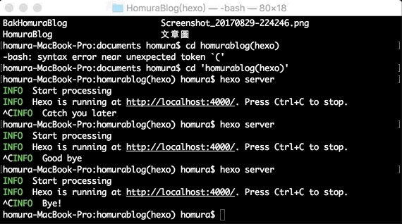
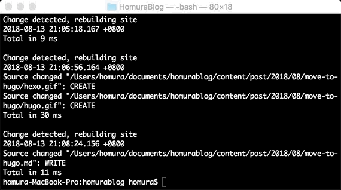

Blog - 更換成Hugo
文章目錄
換用Hugo的契機
最近看到微軟某位MVP把Blogger搬到Hugo上了，然後我去Google了一下跟Hexo的差別，發現幾乎都是說Hexo太慢了…..
所以我也考慮一下換用Hugo
使用Hugo的感想
編譯的速度已經不能說是快一些，Hugo的編譯速度實在太快，幾乎一儲存就編譯好…..
還在用Hexo的人可以趕快換Hugo了
比較一下啟動速度
Hexo

Hugo

是不是差很多… 剩下讓大家自己去體驗一下吧!!!
Gitpage從Hexo更換到Hugo
其實很簡單只要把發行的檔案更換成Hugo的就行了，不過因為我們Gitpage上面已經有檔案，所以不能直接傳上去。
首先先在hugo專案底下建立pulic資料夾
$ mkdir public
進入資料夾，並初始化
$ cd public
$ git init
再git pull下來
$ git pull https://github.com/帳號/帳號.github.com.git
hugo 產生發行檔
$ cd ../
$ hugo -t 主題名稱
路徑指到public裡，推上Gitpage
$ cd public
$ git remote add origin https://github.com/帳號/帳號.github.com.git
$ git add .
$ git commit -m "隨便打"
$ git push origin master